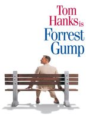

Форрест Гамп
Рейтинг: 8.9/10
Год: 1994
Режиссеры: Роберт Земекис
Описание Форпест Гамп

От лица главного героя Форреста Гампа, слабоумного безобидного человека с благородным и открытым сердцем, рассказывается история его необыкновенной жизни.
Фантастическим образом превращается он в известного футболиста, героя войны, преуспевающего бизнесмена. Он становится миллиардером, но остается таким же бесхитростным, глупым и добрым. Форреста ждет постоянный успех во всем, а он любит девочку, с которой дружил в детстве, но взаимность приходит слишком поздно.
Ошибки в фильме
Внимание! Список ошибок в фильме может содержать спойлеры. Будьте осторожны.
После того, как Дженни (Робин Райт) умирает, Форест приходит посетить ее могилу. Он говорит: «Ты умерла в субботу». Однако надпись на могильном камне противоречит данной фразе. Там указана дата смерти — 22 марта 1982 года (понедельник).